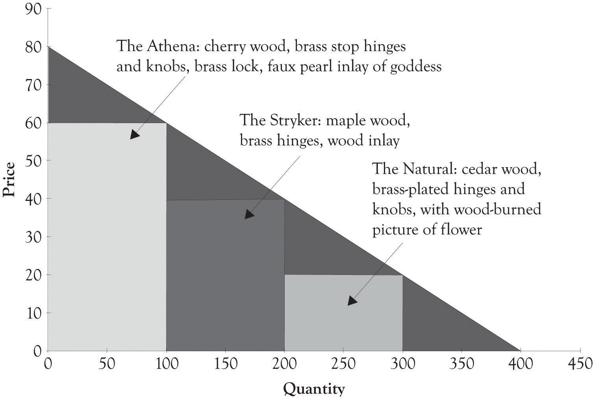

The demand for a product is influenced by a number of factors including product availability, the utility or usefulness of a product, consumer income levels, product features, marketing efforts, product awareness, the quality and performance of substitute products, fashion and the cost of complementary products. This chapter illustrates how product differentiation curves (PD curves)Illustrates the relationship between price and the quantity demanded. It can include different versions of a product on the curve and also segments each product version according to the willingness-to-pay characteristics of buyer groups. can be used to increase revenues and continually deliver updated products and services. We will sometimes refer to PD curves as versioning curves. The focus will not be on the math or even on the actual form of the demand curve. Our focus will be on using product differentiation or versioning curves as a conceptual tool for developing different product versions.
A PD curve is very useful in illustrating the relationship between price and the quantity demanded. But there is one major difference between the PD curve and the typical demand curve. The PD curve can include different versions of a product on the curve and also segments each product version according to willingness-to-pay characteristics of the buyer groups as illustrated in the case of Joan’s jewelry (see Figure 4.1 "Product Differentiation or Versions Curve for Joan's Jewelry"). These major groups are Midas, Atlas, and Hermes consumers. The primary purpose of the PD curve is to assist in identifying product versions and prices levels for discriminating each product version. The process for matching products to the willingness-to-pay segments is rooted in experimentation and the continuous introduction of new versions of products and services.
The PD curve is very useful for product positioning. Product positioning is the process where sellers and producers try to create an image, an identity, or an emotion toward a product or a service in the minds of consumers. This is the essence of the brand concept. A brand is simply something that lives in the head of consumers.Adamson (2006). The brand is a composite of the mental associations that are generated when you see or think about a certain product. Our focus will be on positioning products and services according to the different customer segments’ willingness-to-pay and price sensitivities. The PD curve can of course be used to illustrate how a single standardized product can be differentiated by geography, by market segment, and through branding efforts.
Figure 4.1 Product Differentiation or Versions Curve for Joan's Jewelry
One promising application of the PD curve is that it can be used to identify the so-called Blue Ocean markets. A Blue Ocean market is a market that does not exist. The goal is to create a new product that is radically differentiated from existing products that are being offered and to create the Blue Ocean market.Kim and Mauborgne (2005). A related concept in the marketing literature, called lateral marketing, was developed by Kotler and de Bes (2003).